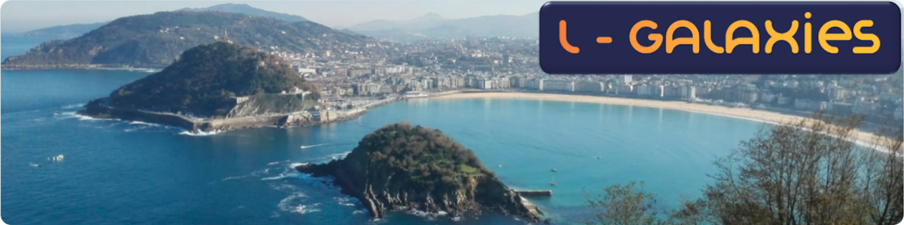

Basic information

Date: 22nd to 24th January 2024
Location: DIPC, San Sebastian, Spain
The workshop will hybrid, with online participation available via zoom.
The workshop will include:
(a) presentations on the latest L-Galaxies code developments and results from various groups
(b) discussions about future plans for the model and possible collaborations
(c) a "coding session" to get new users up-and-running with the latest public version of the code
If you are interested in attending, either in-person or virtually, please contact the main organiser (Silvia Bonoli) at:
silvia.bonoli -at- dipc.org